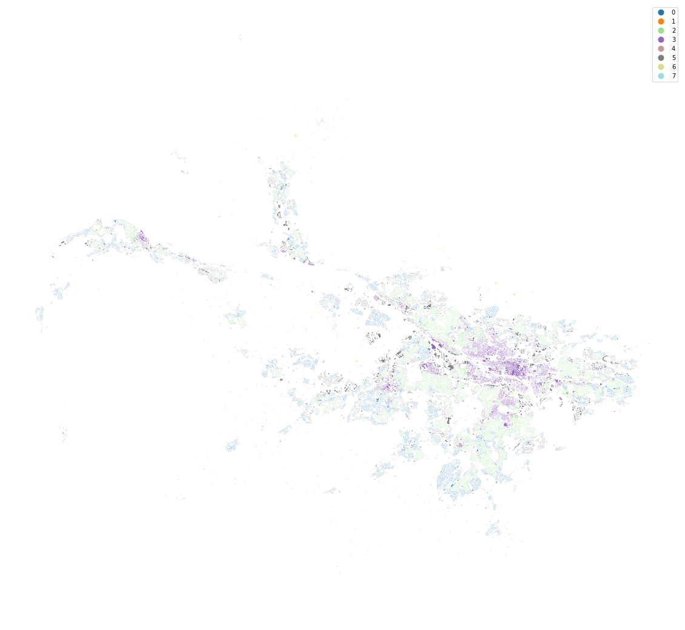
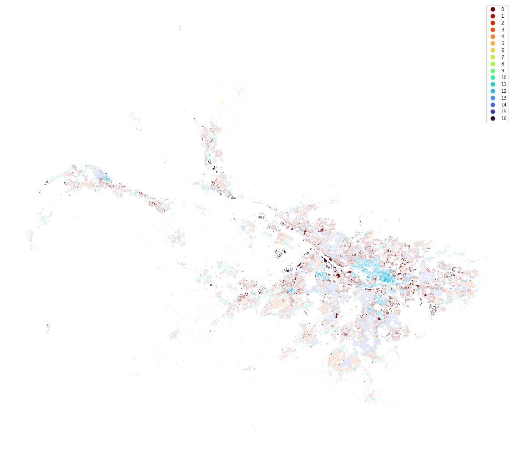
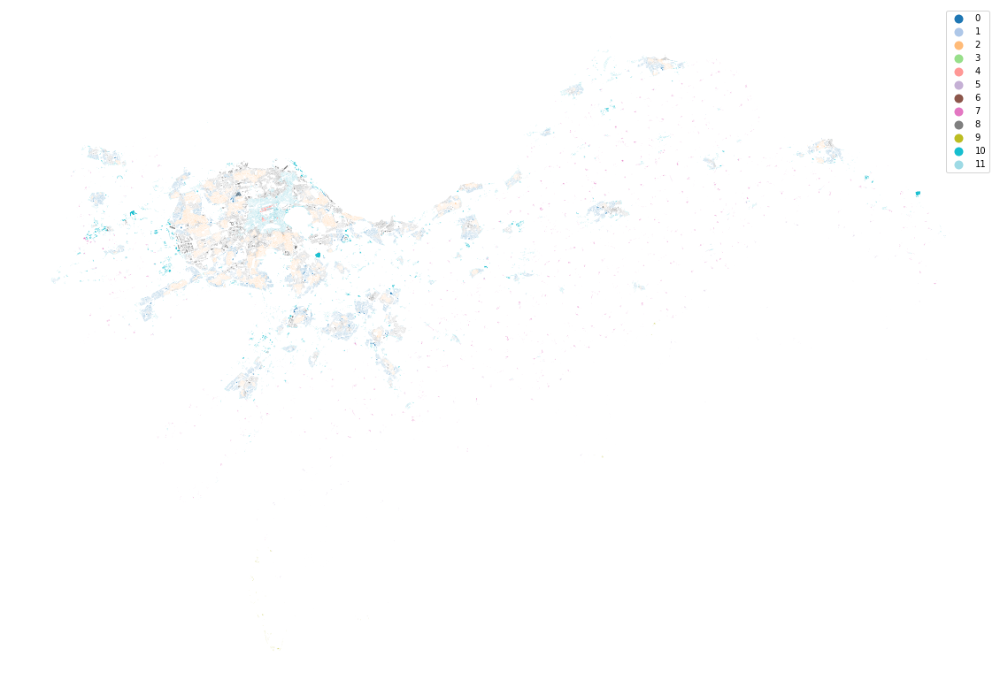
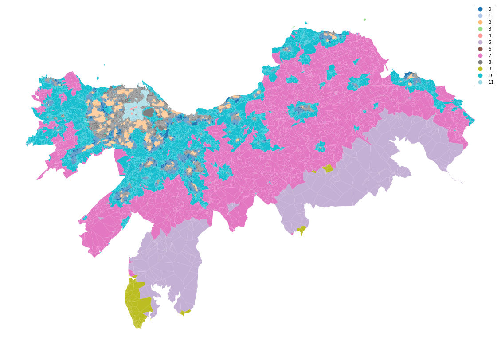

import geopandas as gpd
import pandas as pd
chunks = gpd.read_parquet('../../urbangrammar_samba/spatial_signatures/local_auth_chunks.pq')
from shapely.geometry import Point
gla = gpd.GeoSeries([Point(-4.25633,55.85605)], crs=4326).to_crs(27700)
chunks[chunks.intersects(gla[0])]
| geometry | chunkID | |
|---|---|---|
| lbls | ||
| 68.0 | POLYGON ((258955.030 656912.605, 258946.637 65... | 68 |
data = pd.read_parquet("../../urbangrammar_samba/spatial_signatures/morphometrics/convolutions/conv_68.pq")
from sklearn import preprocessing
scaler = preprocessing.StandardScaler()
scaled_data = scaler.fit_transform(data.drop(columns='hindex').fillna(0))
from clustergram import Clustergram
cg = Clustergram(range(1, 20), backend='cuML', n_init=10)
cg.fit(scaled_data)
PCA computed in 1.8118793964385986 seconds.
K=1 fitted in 2.6140174865722656 seconds.
K=2 fitted in 3.840221881866455 seconds.
K=3 fitted in 5.130520582199097 seconds.
K=4 fitted in 5.689948797225952 seconds.
K=5 fitted in 5.8220813274383545 seconds.
K=6 fitted in 9.179589033126831 seconds.
K=7 fitted in 7.834455966949463 seconds.
K=8 fitted in 12.464859247207642 seconds.
K=9 fitted in 15.907640933990479 seconds.
K=10 fitted in 13.568340301513672 seconds.
K=11 fitted in 19.260111331939697 seconds.
K=12 fitted in 15.85264539718628 seconds.
K=13 fitted in 20.813782691955566 seconds.
K=14 fitted in 22.471310138702393 seconds.
K=15 fitted in 24.740341186523438 seconds.
K=16 fitted in 18.414419412612915 seconds.
K=17 fitted in 24.593284130096436 seconds.
K=18 fitted in 30.00491166114807 seconds.
K=19 fitted in 20.45266103744507 seconds.
cg.plot(figsize=(20, 20), linewidth=0.5, cluster_style={"edgecolor": "r", "alpha":.6}, size=1,
line_style={"alpha":.5})
<AxesSubplot:xlabel='Number of clusters (k)', ylabel='PCA weighted mean of the clusters'>
from cuml import KMeans
km = KMeans(n_clusters=8, n_init=10).fit(scaled_data)
blg = gpd.read_parquet("../../urbangrammar_samba/spatial_signatures/tessellation/tess_68.pq")
blg['clusters'] = km.labels_
blg = blg.set_geometry('buildings')
ax = blg.plot('clusters', categorical=True, legend=True, figsize=(20, 20), cmap='tab20')
ax.set_axis_off()

km = KMeans(n_clusters=17, n_init=10).fit(scaled_data)
ax = blg.plot(km.labels_, categorical=True, legend=True, figsize=(20, 20), cmap='turbo_r')
ax.set_axis_off()

edi = gpd.GeoSeries([Point(-3.20889,55.94513)], crs=4326).to_crs(27700)
chunks[chunks.intersects(edi[0])]
| geometry | chunkID | |
|---|---|---|
| lbls | ||
| 81.0 | MULTIPOLYGON (((347072.714 658735.718, 347070.... | 81 |
data = pd.read_parquet("../../urbangrammar_samba/spatial_signatures/morphometrics/convolutions/conv_81.pq")
scaler = preprocessing.StandardScaler()
scaled_data = scaler.fit_transform(data.drop(columns='hindex').fillna(0))
cg = Clustergram(range(1, 20), backend='cuML', n_init=10)
cg.fit(scaled_data)
PCA computed in 0.13742828369140625 seconds.
K=1 fitted in 1.7725574970245361 seconds.
K=2 fitted in 3.0521204471588135 seconds.
K=3 fitted in 3.949427843093872 seconds.
K=4 fitted in 5.335289239883423 seconds.
K=5 fitted in 4.076547384262085 seconds.
K=6 fitted in 4.301805019378662 seconds.
K=7 fitted in 5.454430818557739 seconds.
K=8 fitted in 7.275106430053711 seconds.
K=9 fitted in 8.73854112625122 seconds.
K=10 fitted in 7.599378824234009 seconds.
K=11 fitted in 9.991353511810303 seconds.
K=12 fitted in 8.904255390167236 seconds.
K=13 fitted in 8.294894456863403 seconds.
K=14 fitted in 10.175398588180542 seconds.
K=15 fitted in 10.113253355026245 seconds.
K=16 fitted in 13.158761024475098 seconds.
K=17 fitted in 14.406205654144287 seconds.
K=18 fitted in 15.91187834739685 seconds.
K=19 fitted in 15.001056432723999 seconds.
cg.plot(figsize=(20, 20), linewidth=0.5, cluster_style={"edgecolor": "r", "alpha":.6}, size=1,
line_style={"alpha":.5})
<AxesSubplot:xlabel='Number of clusters (k)', ylabel='PCA weighted mean of the clusters'>

blg = gpd.read_parquet("../../urbangrammar_samba/spatial_signatures/tessellation/tess_81.pq")
blg = blg.set_geometry('buildings')
km = KMeans(n_clusters=12, n_init=10).fit(scaled_data)
ax = blg.plot(km.labels_, categorical=True, legend=True, figsize=(20, 20), cmap='tab20')
ax.set_axis_off()

blg = blg.set_geometry('tessellation')
ax = blg.plot(km.labels_, categorical=True, legend=True, figsize=(20, 20), cmap='tab20')
ax.set_axis_off()

!pip install topojson
WARNING: The directory '/home/jovyan/.cache/pip' or its parent directory is not owned or is not writable by the current user. The cache has been disabled. Check the permissions and owner of that directory. If executing pip with sudo, you may want sudo's -H flag.
Collecting topojson
Downloading topojson-1.0-py2.py3-none-any.whl (78 kB)
|████████████████████████████████| 78 kB 6.8 MB/s eta 0:00:011
?25hRequirement already satisfied: numpy in /opt/conda/lib/python3.7/site-packages (from topojson) (1.19.1)
Requirement already satisfied: shapely in /opt/conda/lib/python3.7/site-packages (from topojson) (1.7.0)
Installing collected packages: topojson
Successfully installed topojson-1.0
import geopandas as gpd
df = gpd.read_file(gpd.datasets.get_path('naturalearth_lowres'))
import topojson as tp
%time topo = tp.Topology(df, prequantize=False)
%time topo.toposimplify(5).to_gdf().plot()
CPU times: user 170 ms, sys: 3.05 ms, total: 173 ms
Wall time: 171 ms
CPU times: user 444 ms, sys: 587 ms, total: 1.03 s
Wall time: 366 ms
<AxesSubplot:>
df = gpd.read_file(gpd.datasets.get_path('nybb'))
%time topo = tp.Topology(df, prequantize=False)
%time topo.toposimplify(5000).to_gdf().plot()
CPU times: user 437 ms, sys: 7.95 ms, total: 445 ms
Wall time: 443 ms
CPU times: user 426 ms, sys: 60.6 ms, total: 486 ms
Wall time: 416 ms
<AxesSubplot:>